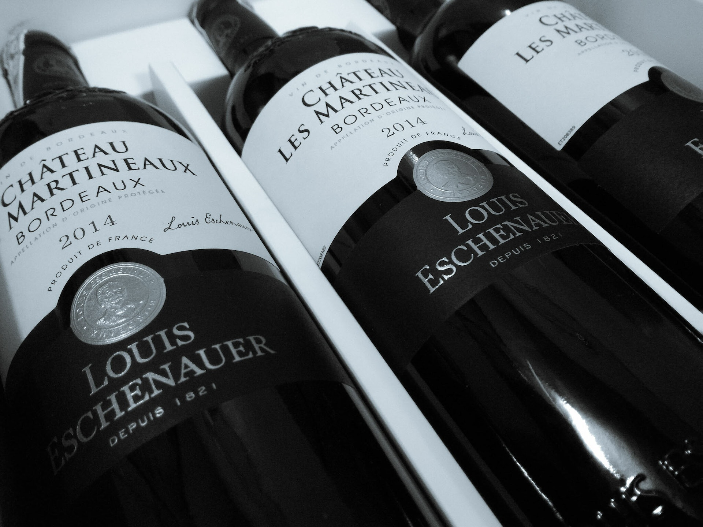

Mudanças obrigatórias nos rótulos dos vinhos.
Acesso Instantâneo a Informações Nutricionais e de Ingredientes Através de um Clique.
A indústria vinícola na União Europeia está próxima de uma transformação digital com a implementação do Regulamento (UE) 2021/2117, em vigor a partir de 8 de dezembro de 2023. Esta normativa estabelece a obrigatoriedade de inclusão de declarações nutricionais e listas de ingredientes nos rótulos de produtos vitivinícolas, permitindo, contudo, que certas informações possam ser apresentadas eletronicamente, numa ótica de modernização da comunicação com o consumidor. No mínimo, deve constar no rótulo o valor energético do vinho.
É importante salientar que os vinhos produzidos e rotulados antes desta data poderão permanecer no mercado até que as existências se esgotem, sem necessidade de alteração dos rótulos.
Neste cenário, a tecnologia de QR codes assume um papel fulcral, facilitando a comunicação entre produtores e consumidores. Uma simples digitalização permite o acesso a uma rica variedade de informações, desde dados nutricionais a histórias envolventes sobre o vinho e o seu produtor. A SelfQuestion, empresa portuguesa pioneira, parceira, destaca-se neste contexto, oferecendo soluções de QR codes e E-labels personalizáveis, que não só asseguram a conformidade regulatória, mas também proporcionam uma experiência ao consumidor enriquecida e informada.
A possibilidade de alterar informações em tempo real, sem modificar o QR code existente nos rótulos, é uma das várias vantagens distintivas da oferta da SelfQuestion. Essa solução não apenas assegura a conformidade com os regulamentos da UE, mas também fortalece uma comunicação transparente e imersiva com o cliente.
Este novo panorama não só respeita as regulamentações, como também cria uma nova forma de interação e relacionamento com os consumidores, oferecendo uma oportunidade de explorar novos métodos de conexão, ao fornecer informações detalhadas, narrativas de marca e outras experiências que os QR codes podem desencadear.
Conclusão:
A chegada do Regulamento (UE) 2021/2117 e as soluções propostas por empresas como a
SelfQuestion denotam um futuro vinícola que não só adere às normas, mas também explora
novos horizontes de interação e comunicação com os consumidores, potenciando uma
experiência que é informativa e, ao mesmo tempo, enriquecedora.